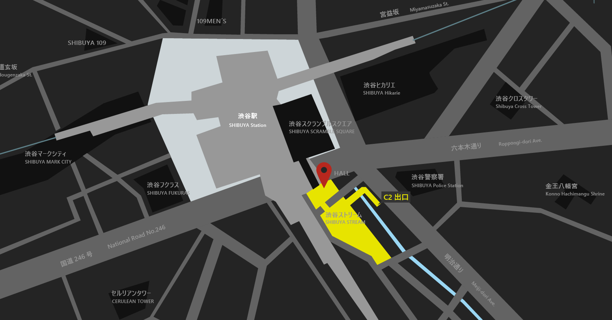

JR渋谷駅からGoogleオフィスの行き方

- 中央改札もしくは南改札を出る
- 東口渋谷スクランブルスクエア2階貫通路を経由して直結
銀座線からGoogleオフィスの行き方
- 下車後に一号車側に向かって進みます
- 改札を出ます
- 少し歩いて左に進みます
- 建物を出て左へ進み、SHIBUYA SCRAMBLE SQUAREが出てきます
- 前を左に進み、10mほど先の下りエスカレーターを降ります
- 降りた後に、右に進みます
-
スクランブルスクエアの中を進み、50mほど先の突き当たりを左へ進みます(この時正面に渋谷ストリームビルが見えてきます)
- 数メートル先を右へ進み、ストリームビルに到着です
半蔵門線・田園都市線からGoogleオフィスの行き方
- 1号車1番ドアから降ります
- 宮益坂中央改札から出ます
- 改札から出た後、C2出口方面へ進みます
- 白い壁に突き当たったところを右に曲がります
-
右折してすぐに渋谷ストリームのアーバン・コアがあるので、ここからエスカレーターで上がります
- エスカレータを降りて右に回り込むと‥
- 渋谷ストリームの1Fエントランスに到着します
井の頭線からGoogleオフィスの行き方
- 進行方向一番前で降ります
- 改札を出ます
- 柱の右側を歩きます
- 100m位先を右に進みます
- 11段の階段を降ります
- 道なりに進みます
- 左へ進みます
- さらに通路を30秒歩きます
- 突き当りを左へ進みます
- 8段の階段があるので上がります
- さらに階段があるので上がります
- 20ｍ程先「中央改札」の案内が見えてきます
- 斜め右に進みます
-
「SHIBUYA SCRAMBLE SQUARE」入り口です。入り口手前を左に進みます
- 少し歩くと下りエスカレータ
- 下りて右へ進みます
- スクランブルスクエアの中を進みます
- 50m程先の突き当りを左へ進みます
- 正面には渋谷ストリームのビルが見えてきます
- 数メートル先を右へ進みます
‹
副都心線・東横線からGoogleオフィスの行き方
- 一号車一番目のドアから降ります
- エスカレータまたは階段で上がります
- ヒカリエ１改札案内を見つけたら右に曲がります
- 通路を６０メートルほど歩きます
- ミニエスカレーターを降ります
- 降りた先にある半球身体のオブジェの左側に行きます
- ヒカリエ１改札を出て右に進みます
- 正面に渋谷スクランブルスクエアが見えたら左に曲がります
- C1からC3出口のところに進みます
-
そのまま道なりに進みエスカレータを上るとGoogleという看板があるのでその矢印の方向に進みます